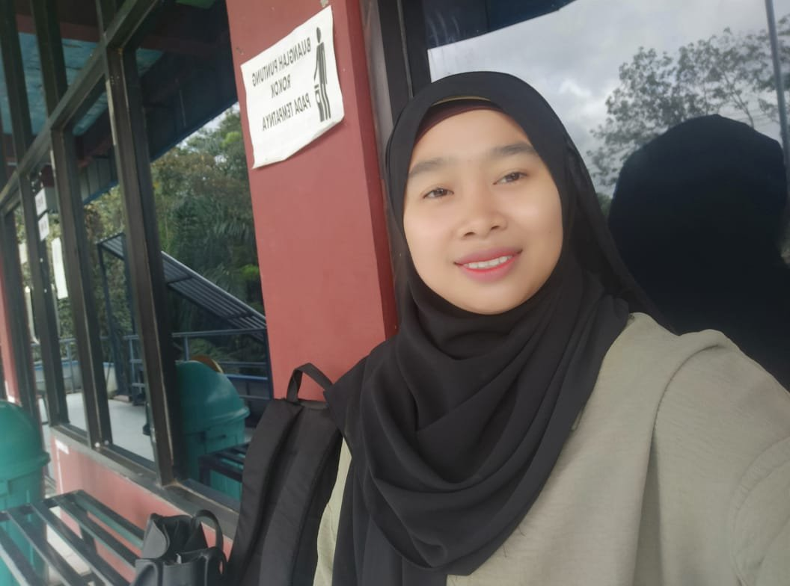

Sedikit cerita tentang latar belakang dan minat saya.

Halo, saya Miskiah, mahasiswi Program Studi Teknologi Informasi. Saya sedang belajar dan ingin terus mengembangkan kemampuan di dunia teknologi, terutama pada bidang pengembangan web, desain antarmuka pengguna, dan desain digital. Melalui portofolio ini, saya ingin memperlihatkan proses belajar dan ketertarikan saya di bidang tersebut.